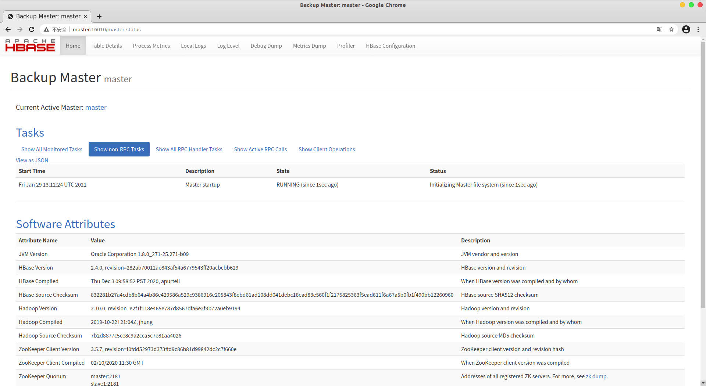
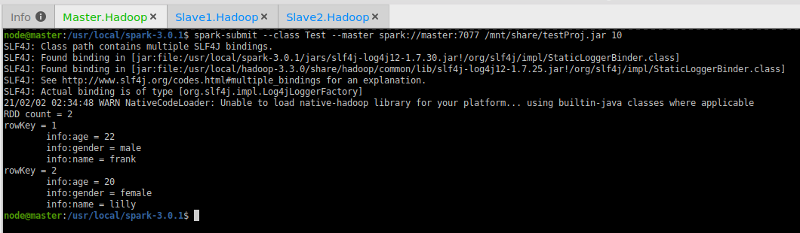

本文Spark配置基于通过VirtualBox搭建的Hadoop集群（3台Ubuntu18.04-Server服务器）环境；
涉及到的包版本：
JDK1.8
jdk-8u271-linux-x64.tar.gzhadoop-3.3.0
hadoop-3.3.0.tar.gzspark-3.0.1
spark-3.0.1-bin-hadoop3.2.tgzscala-2.12.13
scala-2.12.13.tgzhbase-2.4.0
hbase-2.4.0-bin.tar.gzzookeeper-3.6.2
apache-zookeeper-3.6.2-bin.tar.gz
使用VirtualBox搭建基于Ubuntu-Server的三机Hadoop集群
集群规划
| 主机名 | 功能 hadoop|spark |
|---|---|
| master | NameNode | Master, Zookeeper |
| slave1 | datanode, subNameNode, mapreduce.jobhistory | Master, Zookeeper, Worker |
| slave2 | datanode, yarn.resourceManager | ZooKeeper, Worker |
创建Master虚拟机并配置环境
创建虚拟机
使用VirtualBox创建名为Master.Hadoop的虚拟机
点击VBox管理器界面的 全局工具 ->
主机网络管理器，若下方内容为空，则创建一个新的（默认名称为vboxnet0，注意创建完点击启用），然后返回主界面，右键设置Master.Hadoop，在
网络
一栏中默认存在网卡1，连接方式为网络地址转换（NAT），我们启用网卡2，设置连接方式为
仅主机(Host-Only)，界面名称即为vboxnet0（或手动分配的名称）
启动Master.Hadoop虚拟机，载入
ubuntu-18.04.5-live-server-amd64.iso
镜像文件，开始安装，在进行网络设置的时候将自动分配192.168.56.xxx地址的网卡设为手动（manual）,
将子网subnet设置为192.168.56.0/24,
将地址Address设置为192.168.56.104（可任意，只要不与已分配过的重复即可）
一直继续到设置主机名和用户名的界面
设置主机名为master, 用户名为node，以及设置用户密码，一路点done完成安装，重启登录；
安装SSH、JDK与Hadoop
安装并配置SSH
所谓"公钥登录"，原理很简单，就是用户将自己的公钥储存在远程主机上。登录的时候，远程主机会向用户发送一段随机字符串，用户用自己的私钥加密后，再发回来。远程主机用事先储存的公钥进行解密，如果成功，就证明用户是可信的，直接允许登录shell，不再要求密码。
1 | sudo apt update |
授权公钥存放于服务器端，因此在一台存有匹配私钥 id_rsa
的客户机上远程登录服务器可以实现免密，因此现在服务器登录本机localhost是免密的；
要使从这台机器ssh远程登录另一台机器免密，只需要把已授权的公钥文件
id_rsa.pub 发送给那台机器，保存为
.ssh/authorized_keys
即可（如果已存在该文件，就追加到文末）
由此可知，要使三台Hadoop服务器实现两两免密登录，只需要将同一份配置好的
.ssh
文件夹复制到三台机器的用户路径下，就能让每台机子都拥有同一份服务端授权公钥
authorized_keys 以及客户端私钥
id_rsa；而我们创建集群就是通过先配置好一台机器，然后进行整体复制，再修改副本的一些细枝末节（例如主机名，ip地址等）实现的，在复制的过程中自然就配置好了ssh两两免密；
注意，免密登录的账户是与授权公钥相匹配的私钥所有者账户，由于默认
.ssh 文件夹存放于 /home/user/
路径下，因此免密登录只能登录 user
账户，本例中user是用户node，如果ssh登录的是root或其他账户，同样需要输入密码；可以在完成以下所有配置后从终端测试一下：
1 | # Hadoop.Master服务器端 |
安装JDK与Hadoop
主机端进入JAVA官网，点击Java
SE 8栏目中的 JDK Download，下载jdk1.8压缩包
jdk-8u271-linux-x64.tar.gz
主机端进入Hadoop官网，下载hadoop的binary压缩包
hadoop-3.3.0.tar.gz
配置主机与ubuntu-server虚拟机的共享文件夹，详见主机ubuntu与Vbox虚拟机ubuntu-server实现文件共享
通过共享文件夹将JDK和Hadoop压缩包传给虚拟机
在虚拟机端分别解压JDK和Hadoop到 /usr/local/ 路径下
1 | sudo tar -zxvf jdk-8u271-linux-x64.tar.gz -C /usr/local/jdk1.8 # 重命名文件夹 |
配置统环境变量 sudo vim /etc/profile，添加
1 | export JAVA_HOME=/usr/local/jdk1.8 |
将jdk和hadoop的文件夹所有权交给node用户
1 | sudo chown -R node /usr/local/jdk1.8 |
重启虚拟机，或在终端里 source /etc/profile
查看是否安装成功
1 | java -version |
配置Hadoop
由于直接在虚拟机里编辑文件内容较麻烦，可以采取两种方案让编辑文件更方便：
方案一：通过虚拟机与主机的共享文件夹将待编辑文件传输到主机中，编辑完毕再传回去；
方案二：使用VScode或Sublime插件，通过ssh连接到服务器，直接编辑文件（推荐）；
本文采用的是方案二，通过VScode插件Remote-SSH连接虚拟机，可以通过共享文件夹将主机端生成的授权公钥复制到虚拟机端
/root/.ssh/authorized_keys，实现免密；
注意VScode需要登录虚拟机服务器端的root账户才能编辑
/usr/local路径下的文件，因此需要将授权公钥存在/rootroot用户路径下；配置过程与报错解决方案见文末 “问题与解决方案” 问题三；
Hadoop配置文件路径为：/usr/local/hadoop-3.3.0/etc/hadoop/；
以下xml与shell配置内容均包含在
<configuration> </configuration> 块内；
core-site.xml
1 | <!-- 指定HDFS中NameNode的地址 --> |
hdfs-site.xml
1 | <!-- 数据的副本数量 --> |
yarn-site.xml
1 | <!-- Reducer获取数据的方式 --> |
mapred-site.xml
1 | <property> |
hadoop-env.sh 与 yarn-env.sh
1 | export JAVA_HOME=/usr/local/jdk1.8 |
workers
1 | master |
修改hosts文件
sudo vim /etc/hosts
1 | 192.168.56.104 master |
通过Master副本创建Slave虚拟机
如果需要配置Spark的话，最好在Master上配置完Spark再回到这里创建副本，否则之后每台机子都得配置一次，很麻烦
打开VBox管理器，右键虚拟机
Master.Hadoop，选择复制，副本命名为Slave1.Hadoop勾选
完全复制并初始化所有网卡mac，下一步选择完全复制；启动并登录
Slave1.Hadoop, 编辑主机名sudo vim /ect/hostname，更改为slave1编辑网络配置文件
vim /etc/netplan/00-installer-config.yaml将
address一项的 ip 地址修改为192.168.56.105/24；以同样的复制
Slave2.Hadoop，修改主机名为slave2，ip为192.168.56.106/24；
启动与关闭Hadoop
启动Hadoop
启动三台虚拟机
Master.Hadoop，Slave1.Hadoop，Slave2.Hadoop
- 在master端初始化文件系统并启动dfs；
1 | hdfs namenode -format |
- 在部署为
yarn.resourcemanager的slave2端启动yarn；
1 | start-yarn.sh |
- 在部署为
mapreduce.jobhistory的slave1端启动historyserver；
1 | mapred --daemon start historyserver |
通过ip访问Hadoop集群
hdfs集群：192.168.56.104:9870
NameNode：负责管理文件系统名称空间和控制外部客户机访问的主机
本例中NameNode是
master，Hadoop3默认端口为9870；
yarn集群：192.168.235.131:8088
ResourceManager：yarn集群的主控节点，负责协调和管理整个集群（NodeManager）的资源。
本例中RecourceManager是
slave2，Hadoop3默认端口为8088

关闭Hadoop
可以执行 stop-all.sh 关闭所有节点；
- master
1 | stop-dfs.sh |
- slave2
1 | stop-yarn.sh |
- slave1
1 | mapred --daemon stop historyserver |
配置Spark3.0环境
下载Spark压缩包
本地主机端进入Spark官网，下载对应Hadoop版本的Spark3压缩包。由于上文配置的Hadoop版本为3.3.0，因此
package 选择支持Hadoop3.2以上的版本
Pre-built for Apache Hadoop 3.2 and later，点击下方的
spark-3.0.1-bin-hadoop；
通过共享文件夹 VMshare，将压缩包复制到虚拟机中，并解压到
/usr/local/ 路径下，且重命名文件夹为
spark-3.0.1；
1 | sudo tar -zxvf ./spark-3.0.1-bin-hadoop.tgz -C /usr/local |
使用 ls -ll | grep spark
命令，确保spark文件夹的拥有者是node用户；

配置spark-env.sh
1 | cd /usr/local/spark-3.0.1/conf |
sudo vim ./spark-env.sh，文末添加
1 | export JAVA_HOME=/usr/local/java/jdk1.8 |
其中 SPARK_DIST_CLASSPATH
的路径取决于你指定的hadoop可执行文件安装路径；
配置slaves文件
1 | cd /usr/local/spark-3.0.1/conf |
sudo vim ./slaves，将文末默认存在的localhost注释掉，写入两个slave主机名，作为worker
1 | slave1 |
配置环境变量
sudo vim /etc/profile，将Spark路径下的 bin
和 sbin 路径添加到 PATH 变量中；
1 | export SPARK_HOME=/usr/local/spark-3.0.1 |
重启电脑或直接
source /etc/profile，反正登录虚拟机也只用这一个shell；
验证本地Spark
1 | run-example SparkPi 2>&1 | grep "Pi is" # 2>&1 将日志信息都输出到stdout中，而不是输出到终端（输出日志的特殊性） |
使用Spark Shell
打开spark-shell，自动加载scala交互式命令行，自动创建名为
sc 的 spark context 对象，和名为
sqlContext 的 sql context 对象；
1 | spark-shell |
打印 Hello World：
1 | println("Hello World") |
在spark-shell中测试载入本地文件：
1 | val textFile = sc.textFile（"file:///usr/local/spark-3.0.1/README.md"） // 载入文件内容 |
tips：交互式scala环境中清屏的方式为 ctrl+l
验证分布式Spark
确认三台虚拟机均为启动状态，确保dfs和spark均启动
1 | # master |
提交SparkPi应用到Spark集群主机端执行
1 | cd /usr/local/spark-3.0.1 |
--class表示待执行应用的主类--master spark://master:7077指定"standalone"独立部署模式连接到Spark集群spark-examples_2.12-3.0.1.jar指定应用的运行类所在的jar包路径10是程序的入口参数，用于设定当前应用的任务数量
执行 spar-submit
提交应用的日志会保存在作为worker的slave1和slave2的
/usr/local/spark-3.0.1/work
路径下，需要定期删除一次，不然长期下来容易导致磁盘空间不足；
如图所示，表示配置成功
打开浏览器，通过Spark默认的Master外部端口
master:8080，访问Spark集群
配置Spark历史服务
因为spark端口 master:4040
只有在spark-shell运行时才开放访问，为了在shell关闭时也能查看历史任务，需要配置历史服务器记录任务的运行情况；
为了避免一些报错，先在master中关闭hadoop和spark集群
1 | /usr/local/hadoop-3.3.0/sbin/stop-all.sh |
在master端启动hdfs，新建文件夹，命名为
logs
1 | # Master端 |
通过asbru-cm等工具连接三台虚拟机，同时进行以下配置操作（或配置好一台后通过共享文件夹或ssh文件分发的方式传给另外两台）
进入spark路径下的 conf 文件夹，修改
spark-defaults.conf 文件
1 | cd /usr/local/spark-3.0.1/conf |
写入以下内容，注意9000为配置hadoop时在 core-site.xml
内指定的 NN RPC
端口，如果没设置，hadoop3默认端口为8020；（必须启动hadoop集群，且确保dir目录存在）
1 | spark.eventLog.enabled true |
修改 conf/spark-env.sh 文件，添加内容
1 | export SPARK_HISTORY_OPTS=" |
其中最后一项数字 30 表示保存 Application
历史记录的个数，超过该数量时旧的将被覆盖。这个是内存中的应用数，不是Web页面上显示的应用数。
配置完成后重启spark集群和历史服务器
1 | cd /usr/local/spark-3.0.1 |
提交SparkPi测试应用
1 | spark-submit --class org.apache.spark.examples.SparkPi --master spark://master:7077 ./examples/jars/spark-examples_2.12-3.0.1.jar 10 |
此时在 hdfs://master:9000/logs
路径下会生成一个日志文件
可通过浏览器访问 master:18080，查看历史任务记录
可选部分
配置Zookeeper与Spark高可用集群
按照上述配置完成后已经能使用了，但由于集群中Master节点只有一个，存在单点故障问题，因此在对安全性要求高的情况下有必要配置多个Master节点。
当处于活动状态的Master发生故障时，启用备用的Master，确保作业可以正常执行下去。一般采用Zookeeper配置高可用。
主机进入Zookeeper官网，下载最新版压缩包，当前时间点最新的是
apache-zookeeper-3.6.2-bin.tar.gz
通过共享文件夹将压缩包传输给三台虚拟机，并解压到
/usr/local 路径下，对文件夹作重命名
1 | cd /mnt/share |
配置环境变量 sudo vim /etc/profile
1 | export ZOOKEEPER_HOME=/usr/local/zookeeper-3.6.2 |
1 | source /etc/profile |
编辑 zoo.cfg 配置文件
1 | cd /usr/local/zookeeper-3.6.2/conf |
1 | # 修改dataDir |
接着在三台虚拟机的 dataDir
路径中创建文件 myid，文件内容为 server.x
的数字 x
例如：在master主机中创建文件
/usr/local/zookeeper-3.6.2/data/myid，文件内容为
1 | 0 |
其他两台按照同样的方式配置；
然后编辑 spark-env.sh
1 | sudo vim /usr/local/spark-3.0.1/conf/spark-env.sh |
注释掉之前指定的 SPARK_MASTER_HOST 以及
SPARK_MASTER_PORT，添加
SPARK_DAEMON_JAVA_OPTS，之前历史服务器的配置可以保留。
以下为完整的配置：
1 | export JAVA_HOME=/usr/local/java/jdk1.8 |
其中修改 SPARK_MASTER_WEBUI_PORT
为8989是为了避免zookeeper工作时可能占用8080端口导致冲突；
全部配置完成后，首先在每台虚拟机中启动zookeeper
1 | zkServer.sh start |
然后在master中启动spark集群
1 | cd /usr/local/spark-3.0.1 |
在slave1中启动备用master
1 | cd /usr/local/spark-3.0.1 |
现在打开浏览器，可以分别访问 master:8989 和
slave1:8989，注意二者的区别在于master的status显示为ALIVE，表示活跃状态，而slave1显示STANDBY，表示待激活状态，当master宕机后，slave1作为备用master就会变成ALIVE状态工作；
当以高可用方式运行Spark集群时，提交应用需要提交到所有master上，例如
1 | spark-submit --class org.apache.spark.examples.SparkPi --master spark://master:7077,slave1:7077 ./examples/jars/spark-examples_2.12-3.0.1.jar 10 |
最后测试一下将master进程杀死后，slave1是否会通过zookeeper判断宕机状态，并及时启动接管master工作；
在master端通过 jps 命令查到 Master 节点进程的
pid，通过kill -9命令强制结束进程
结束进程后 master:8989
立刻变为不可访问状态，等待十几秒后查看
slave1:8989，发现状态已由 STANDBY 变成了
ALIVE
Spark与HBase交互
配置HBase
进入Apache官网或直接进入清华源apache镜像，下载hbase压缩包
hbase-2.4.1-bin.tar.gz；
解压缩到三台虚拟机 /usr/local/ 路径下，默认文件夹名为
hbase-2.4.1
配置 etc/profile
1 | export HBASE_HOME=/usr/local/hbase-2.4.1 |
进入 hbase-2.4.1/conf 路径下，配置
hbase-env.sh 文件
1 | export JAVA_HOME=/usr/local/java/jdk1.8 |
相同路径下配置 regionserver
文件，删除原有内容，添加三台主机名
1 | master |
相同路径下配置 hbase-site.xml 文件
删除原有的 <property> 元素块，添加如下配置
1 | <!-- HBase的Region的共享目录, 用于将HBase存入硬盘, 通常给出一个HDFS的目录, 用hdfs://$namenode:hdfsport(查看hadoop的core-site.xml配置), 如不设定, 则保存在本机的/tmp下 --> |
在master中启动hdfs节点
start-dfs.sh，并在hdfs根目录中创建 hbase
文件夹
1 | hdfs dfs -mkdir /hbase |
验证Hbase
启动
master启动dfs
1 | start-dfs.sh |
三台机子均启动zookeeper服务器
1 | zkServer.sh start |
在master中启动 Hbase Master
1 | start-hbase.sh |
打开浏览器，通过端口 master:16010 访问 HMaster

如果启动过程报错，或启动后HMaster进程自动消失了，可以查看
hbase/logs 路径下的日志文件
hbase-node-master-master.log，查找 failed 或 error
关键字定位错误，对症下药。
此外，hbase提供了交互式shell，通过 hbase shell
命令可启动
关闭
master中关闭 HMaster
1 | stop-hbase.sh |
关闭三台机子的 zookeeper 服务器
1 | zkServer.sh stop |
关闭三台机子的 regionserver
1 | hbase-daemon.sh stop regionserver |
出现异常，需要单独关闭 HMaster 的命令
1 | hbase-daemon.sh stop master |
创建Hbase数据表
注意启动顺序为
三台
zkServer.sh startmaster
hadoop/sbin/start-dfs.shmaster
spark/sbin/start-all.shmaster
hbase/bin/start-hbase.sh任意一台
hbase shell
1 | hbase:001:0> create 'student','info' |
拷贝jar包
将 hbase/libs 路径下以"hbase"开头的所有
.jar 包拷贝到 spark/jars 路径下
测试程序
启动spark-shell，测试程序是否可用，程序来源见 Spark使用newAPIHadoopRDD方式读取HBase表
1 | import org.apache.hadoop.hbase.{CellUtil, HBaseConfiguration} |
将import与main函数的内容复制到spark-shell中执行，确保程序没有问题后进行下一步
打包jar
这里使用的环境与工具是 Intellij IDEA + Maven
创建一个Maven项目，在File->setting中设置好maven包路径以及配置文件路径，通过File->Project Structure->Global Libraries添加scala-sdk，并右键项目名，选择Add Framework Support添加scala框架支持；
配置 pom.xml 依赖
1 | <properties> |
点击
File->Project Structure->Artifacts->+->JAR->From modules with dependencies，浏览选择主类
点击 OK，删除Output
Layout左侧子栏目中除了目标jar之外的其他所有jar依赖，单击目标jar，下方可确认
Main class 的名称，也就是在执行 spark-submit
时 --class 指定的参数名
确认后点击
build->build Artifacts->build
即可开始编译；
编译完成后即在项目的 /out 路径下生成jar包
将jar包复制到共享文件夹中，或直接发送到任意一台虚拟机上，提交应用
1 | spark-submit \ |

遇到的问题与解决方案
注意点一：hadoop要求主机名不带下划线_；
注意点二：每台运行hadoop的主机的用户名需要相同；
注意点三：使用 chown -R
将hadoop、spark等相关文件夹所有者变更为 node，否则会有很多
permission denied 的错误
问题一：启动 hdfs namenode -format
报错，内容大致是无法创建或写入logs文件夹；
- 原因：所在用户（node）无法对hadoop路径下的文件进行写操作；
- 解决方案：
chown node /usr/local/hadoop-3.3.0；
向HDFS执行put命令时报错：
- 原因：格式化多次导致 DataNode 运行异常；
- 解决方案：参考博客，按以下步骤进行：
stop-all.sh关闭所有节点；- 删除每台服务器
/usr/local/hadoop-3.3.0/data/tmp/dfs/路径下所有文件夹中的current子文件夹，NameNode节点所在服务器路径下有两个文件夹，分别是name和data，yarn-resourceManager节点所在服务器路径下只有data文件夹，辅助NameNode节点所在服务器路径下有namesecondary和data两个文件夹； - Master服务器中重新格式化NameNode
hadoop namenode -format； - 分别在Master和作为Yarn.resourceManager的服务器上运行
start-dfs.sh和start-yarn.sh； - 使用
jps查看 DataNode 是否正常运行； - 可使用
hdfs dfsadmin -report查看服务器集群的状态；
VScode插件Remote-SSH使用方式：
F1，输入ssh可以查看补全选项；
选configuration可以编辑连接对象的默认配置文件，在home和etc路径下各有一个，改一个就行；
选Connect current window to host可以连接指定配置文件中的指定host；
- 此步骤弹窗报错：
could not establish connection to XXX，见下方情况一；
- 此步骤弹窗报错：
上一步通过，但下一步输入密码后显示
permission denied见下方情况二；情况一：不论使用
ssh登录什么账户，都显示could not establish connection to XXX；- 原因：服务器端（被访问端）未安装ssh；
- 解决方案：
sudo apt install openssh-server；- 重启 ssh 服务：
service ssh restart； - 查看 ssh 服务状态：
ps -e | grep ssh或service ssh status；
- 重启 ssh 服务：
情况二：直接在终端使用
ssh root@ip连接出现permission denied但使用普通用户可以登录；- 原因一：root用户密码为系统给的默认值，没有修改过，自然每次密码错误都是permission
denied；
su与sudo的区别：su是切换用户，不加参数默认切换到root用户，需要输入root用户的密码才能切换，而sudo指的是可在任意用户下直接使用超级用户权限(root用户的权限)执行命令，这只是一种授权指令，确保执行命令的用户知道自己将用root权限，因此需要的是执行命令的用户的密码，而非root用户的密码；- 解决方案：
sudo passwd root，更改root用户密码，即可用root用户登录；
- 原因二：服务器端设定了不可用root权限远程登录；
- 解决方案：
sudo vim /etc/ssh/sshd_config，将PermitRootLogin的值设为 yes，重启ssh服务；
- 解决方案：
- 原因一：root用户密码为系统给的默认值，没有修改过，自然每次密码错误都是permission
denied；
Ubuntu下XShell的替代软件
XShell在linux下无法使用，我们可以使用开源软件asbru-cm达到相似的效果。
asbru-c官方文档：https://docs.asbru-cm.net/
安装asbru-cm
1 | curl -1sLf 'https://dl.cloudsmith.io/public/asbru-cm/release/cfg/setup/bash.deb.sh' | sudo -E bash |
打开软件，点击左上角图标 New GROUP，创建服务器组
Hadoop；
在该组下点击左上角第二个图标
New CONNECTION，连接名称填写
Master，进入ssh配置，其中 Host
填写ip，port默认为22，Authentication
一栏填入用户名和密码。；
同样的方式创建与 Slave1 和 Slave2
的连接，创建完毕后，选择 Hadoop 组，点击下方的
connect 按钮，即可同时建立与三台服务器的ssh连接；
点击左下角 Cluster，右侧栏目中点击
添加，创建一个cluster，并将左侧 Hadoop
组内三台服务器都添加到该cluster内；
点击左下角
PCC，如果不是从cluster启动连接的话，在PCC界面无法选择cluster，也无需勾选Send to ALL Terminals，默认就是发送到所有终端，在
Type commmands here
一栏可直接输入命令同时与三个终端进行交互，注意后面的
Send on <INTRO>
不勾选时，输入的内容是直接反馈到右侧终端界面的，不会显示在文本框内；
个人犯蠢教训
进行 spark-submit 提交应用进行一半时不小心
CTRL+C 强制中断了，之后再也提交不成功，报错如下：
我傻了，--class 入口类名应该是
org.apache.spark.examples.SparkPi，我后来的提交都是手打的，少写了个
.spark，导致无法找到并加载这个类，跟什么强制中断没有用半毛钱关系，自始至终我都丝毫没怀疑过这个能敲错，真是丢人现眼长记性了。
高可用Spark两台Master端口全部显示STANDBY
配置完Zookeeper后发现master和slave1在8989端口上均处于 STANDBY 状态
起初以为是配置文件的问题，但不论是改 zoo.cfg 还是改
spark-env.sh
都没用，最后发现是因为我只在master上启动了zkServer，而slave上没有启动，具体原因我暂时也不明白，后来三台都启动zk就好了;
hbase shell中执行create报错
报错关键句：ERROR: org.apache.hadoop.hbase.ipc.ServerNotRunningYetException: Server is not running yet；
在网上找到的大部分解决办法都是关闭hadoop的安全模式，但我通过
hdfs dfsadmin -safemode get
命令查看到安全模式本身就是关闭的，再关闭也无济于事；
在尝试网上各种办法期间还碰到了启动hbase后HMaster进程自动关闭的问题，我没有照网上大部分教程说的启动
zkCli.sh，删除hbase节点再重启zk，而是直接执行
hdfs namenode -format
把namenode格式化了，又导致datanode出问题参考问题二的解决方式重复了一遍，然后启动dfs，在根目录重新创建spark历史服务需要的
/logs 目录，以及hbase需要的
/hbase目录，绕了一大圈重新恢复HMaster之后仍然没有解决hbase
shell的问题；
解决HMaster问题仍然报错后，重新查看了 /hbase/logs
路径下的 hbase-node-master-master.log
日志文件，发现记录了一个关键错误：
1 | 2021-01-31 05:00:23,966 WARN [RS-EventLoopGroup-1-1] concurrent.DefaultPromise: An exception was thrown by org.apache.hadoop.hbase.io.asyncfs.FanOutOneBlockAsyncDFSOutputHelper$4.operationComplete() |
照这个错在网上又是一顿查，最后在 ApacheCN-Hbase社区文档 第136条RegionServer中找到了问题所在：
我们将尝试将 AsyncFSWAL 用于 HBase-2.x，因为它具有更好的性能，同时消耗更少的资源。但 AsyncFSWAL 的问题在于它侵入了 DFSClient 实现的内部，因此在升级 hadoop 时很容易被破解，即使是简单的补丁发布也是如此。如果你没有指定 wal 提供者，如果我们无法初始化 AsyncFSWAL ，我们将尝试回退到旧的 FSHLog ，但它可能并不总是有效。失败将显示在这样的日志中：
官方指定需要在 hbase-site.xml
文件中配置一个property块，内容如下
1 | <property> |
问题解决 T_T
Spark启动start-all.sh报错
spark启动 sbin/start-all.sh
异常，终端内显示的报错信息为
1 | failed to launch: nice -n 0 /usr/local/spark-3.0.1/bin/spark-class org.apache.spark.deploy.master.Master --host master --port 7077 --webui-port 8080 |
master日志文件记录：
1 | 21/02/01 01:05:38 ERROR SparkUncaughtExceptionHandler: Another uncaught exception in thread Thread[main,5,main], process halted. |
原因：在解决之前的问题时无意注释掉了 spark-env.sh
中的一行：
1 | export SPARK_DIST_CLASSPATH=$(/usr/local/hadoop-3.3.0/bin/hadoop classpath) |
取消注释或重新加上这行就解决了
spark-shell中执行import引入包报错
1 | scala> import org.apache.hadoop.hbase.HBaseConfiguration |
原因：从 hbase/libs 中将以"hbase"开头的
.jar 包拷贝到 spark/jars
路径下时，一开始为了将拷贝进来的包隔离开，多创建了一级文件夹
spark/jars/hbase，导致在spark-shell中 import
找不到 hbase-common 的包。
解决方案：拷贝时直接贴到 spark/jars 路径中即可。
另外有一点，当时参考网上教程，说除了以"hbase"开头的包外，还需要拷贝两个包，分别是：
- guava-11.0.2.jar
- protobuf-java-2.5.0.jar
我在hbase路径中没找到这两个包，还特地去网上看了五花八门的解决方案，有让手动下载的，有让重装的，最后我非常无语地在
spark/jars 里发现这俩包本来就在spark里有。
当无知的脑子碰上误导人的网上教程，得走太多弯路。
spark-submit提交jar包报错
报错内容：Error: Failed to load class Test.
解决办法：使用idea打包时需要将 Output Layout
一栏中除了目标jar之外的其他jar全部删除，只留complie
output文件（META-INF文件夹是否保留不影响），如图所示
另外，执行spark-submit时需要确保 --class
的参数与打包时设置的Main Class一致
1 | spark-submit --class Test --master spark://master:7077 /mnt/share/testProj.jar 10 |